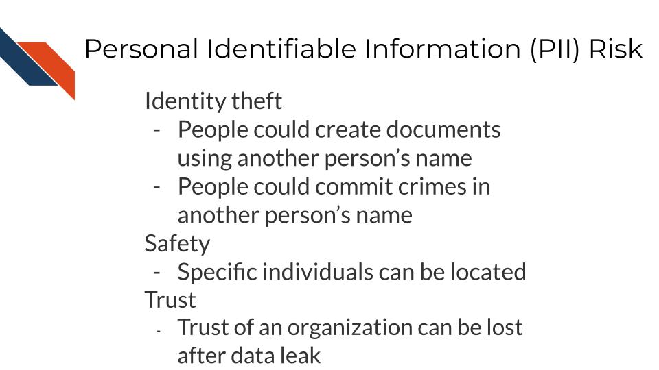

Chapter 2 Data Privacy
Cancer research often involves personal health data that requires compliance with Health Insurance Portability and Accountability Act (HIPAA) regulations. In this chapter we will discuss data management strategies to maintain compliance with these important regulations.
Cancer research often involves the collection of information about research participants that is personal. There are two categories of such information: personal identifiable information (PII) and protected health information (PHI).
Note that these are general definitions and whether something counts as PII or PHI has to be evaluated in a case-by-case basis by an expert such as an Internal Review Board (IRB) member or compliance officer.
2.1 Privacy vs Security
So what exactly is privacy? There are a couple of major ways to think about this.
The first is keeping other individuals from finding information about others from a legal stand point. In other words, there are legal restrictions like HIPAA to help protect the rights of individuals, by keeping others from accessing information about them.
Beyond what is required by law, which may vary depending on what country you perform research in, there are ethical guidelines that define beyond legal ramifications, why someone should protect the privacy of data. In other words, the legal system defines what we have to do, while ethics defines what we should do.
Data privacy has a close relationship with data security. Both are concerned with keeping the data from being accessed by those who should not have access. Security is however more concerned with the actual process of protecting the data from unauthorized people, as well as protecting the data from other forms of damage, while privacy is more concerned with who can access the data and use the data how (Bambauer 2013).
2.2 PII (personal identifiable information)
PII (personal identifiable information) are aspects of a person that could allow you to identify a person.
PII is defined by the US Department of Labor as:
“Any representation of information that permits the identity of an individual to whom the information applies to be reasonably inferred by either direct or indirect means.”
PII is also defined by the US General Services Administration as:
“Information that can be used to distinguish or trace an individual’s identity, either alone or when combined with other personal or identifying information that is linked or linkable to a specific individual.”
Why is this term defined by the Department of Labor and the US general Services Administration? Because the Privacy Act of 1974 (“Privacy Act of 1974” 2022), is a US federal law that governs the “collection, maintenance, use and dissemination” of personal information. US agencies have access to a large amount of PII and must act in accordance with the Privacy Act to protect this data.
Examples include (but aren’t limited to):
- Name
- Telephone number
- Address
- Social security number
- Age
- Driver’s licenses
- Medical record numbers
- Full face photographs
- IP addresses
Some PII as in the examples above can pose significant risk to individuals if other people were to gain access, such as social security numbers. Other PII such as age does not necessarily pose as much risk unless combined with other information.
Thus this information is categorized in two ways as being nonsensitive which is easy to find and poses little risk and sensitive information which is harder to find, poses higher risk and requires more protection.
2.2.1 PII Risk
What is the risk of PII getting into the hands of people it shouldn’t? Why was the Protection Act necessary?
PII can pose a risk for identity theft, which can have financial, professional, criminal, and personal consequences (DiNardi 2022), as criminals can get loans and credit card in other people’s names, as well as commit crimes under the guise of other people’s identities. This can result in reputation loss and loss of opportunities.
A leak of PII can also pose a safety risk, as criminals can identify the likely locations of specific individuals if performing targeted crimes. In addition, a leak of PII might breach patients’ trust in an organization’s ability to keep their data safe and therefore may be less interested in engaging with the organization.

2.3 PHI (protected health information)
The U.S. Department of Health & Human Services describes protected health information (PHI) as:
…information including demographic data that relates to:
the individual’s past, present or future physical or mental health or condition, the provision of health care to the individual, or the past, present, or future payment for the provision of health care to the individual
This includes 18 categories:
- Patient names
- Geographical elements (such as a street address, city, county, or zip code)
- Dates related to the health or identity of individuals (including birthdates, date of admission, date of discharge, date of death, or exact age of a patient older than 89)
- Telephone numbers
- Fax numbers
- Email addresses
- Social security numbers
- Medical record numbers
- Health insurance beneficiary numbers
- Account numbers
- Certificate/license numbers
- Vehicle identifiers
- Device attributes or serial numbers
- Digital identifiers, such as website URLs
- IP addresses
- Biometric elements, including finger, retinal, and voiceprints
- Full face photographic images
- Other identifying numbers or codes
2.4 PHI is a subset of PII
PHI is really a subset of PII. It is personal identifiable information that relates to or could relate to health.

Some PII is always PHI, like health insurance numbers or clinical data such as radiology reports with names or other distinguishing features. Other PII becomes PHI based on context. For example, name and email address aren’t necessarily PHI, unless the are in the context of medical care or research. This could be the case if a patient receives notes from the doctor through email or researchers have a database of participants with email addresses that could be used to distinguish the identity of people in the study.
2.5 PHI Risk
PHI poses an additional risk rather than just typical PII.
That is because the health information related to PHI, can be used to determine if an individual has a particular condition or health risk and this information could be used against the individual when it comes to employment or insurance. This is particularly an issue if conditions are not known by others or the condition is stigmatizing.
2.6 Cancer research data and PHI
Certain genomics data can be used to identify individuals, as well as certain radiology images with particular distinguishing features. With advances in machine learning more of these data types may become identifiable in the future as well. However in general, clinical data and certain genomics data (particularly whole genome sequencing - which is essential a genomic signature) are more likely to be identifiable and therefore pose a higher risk to research participants.
So what does this mean for the data you handle?
A non-comprehensive list of identifiable and protected information:
- Clinical information in metadata
- Genomic sequences
- Whole genome sequences
- Exome sequencing
- Whole transcriptome sequencing
- Single nucleotide polymorphisms
- Geneology information
What is not protected and generally is safe:
- Summarized cohort data
Data in which individuals have been aggregated together is generally safe. For example, a file that includes an average age calculated across all individuals or a large subset would generally be considered safe. However, this may not always be the case with individuals with very rare conditions. There can also be exceptions to the assumption of safety and/or anonymity when cohort data involves specific groups of people.
- De-identified data
Data in which information about the individuals is removed from the genomic data can be safe to share, but it depends on the genomic data. If the genomic data contains rare variants in which the individuals could be identified or the type of genomic data more readily allows the individuals to be re-identified then the data must be protected (see below on ways in which such data can be shared but with restricted access).
It has been shown that certain types of de-identified genomic data can be re-identified due to the availability of genomic data in datasets like 23andMe, where relatives with unique genomic features can be used to identify relatives of individuals in studies.
The following articles have more extensive information about the current re-identification risk of different genomic data types:
- Privacy considerations for sharing genomics data
- Identifying personal genomes by surname inference
- Preserving genomic privacy via selective Sharing
- Impact of HIPAA’s minimum necessary standard on genomic data sharing
- Genetic information privacy
- The law and medical privacy
- The broken promise that undermines human genome research
2.7 How to ensure the privacy of this information
Your institution will have guidance regarding how to keep this information private and protected but in general there are 4 main strategies we will summarize here:
- As few eyes as possible
The protected data is seen by the smallest number of individuals possible, all of whom have been properly trained and certified to handle the data. Make sure the data is stored in a place that only these few people who are allowed have access to it. If you aren’t sure who has access to a place – don’t put the data there!
- Aggressively de-identify the shared data
Before results or data are shared or published, it is aggressively de-identified. We will talk more about what this is in the next chapter. If data has been summarized over the cohort and there are no identifiers then it is probably safe to share.
- Consider a data use agreement
Data use agreements (DUA) are not typically required for HIPAA compliance when sharing de-identified data. However, if you are unsure if your data still meets compliance requirements, you have other ethical concerns about sharing your data (which we will discuss in later chapters), consider a using an agreement. Finally if you need to share data that is not fully de-identified, than a data use agreement is required. Data use agreements essential restrict who can access and use the data that you might share, as well as what they may do with the data. Importantly this needs to be agreed upon by an IRB and consented to by the research participants in some manner (more on this to come) before it is in use.
See here and here for more information about when you might need a data use agreement. Note that your particular situation and institute may have slightly different rules or restrictions.
See here for an example DUA template from the Harvard Catalyst. Be sure to follow the attribution guidelines outlined in the link if you adapt the template for your use.
- Err on the side of caution!
If in doubt if something counts as PHI or PII, consider reaching out to an office at your institute that can help, such as possibly an Internal Review Board (IRB), a research administration office, or a HIPAA compliance office.
If you plan to share your data somewhere and you are unsure whether a database or repository is secure and HIPAA compliant, ask those who manage that database or repository!
2.8 How is HIPAA enforced?
The Office for Civil Right (OCR) of the United States Department of Health and Human Services is in charge of enforcing HIPAA compliance.
If you feel that someone is using or sharing data that is in violation of HIPAA compliance, you can file a complaint online using the OCR compliant portal. Typically you should see if you can get the violation to be resolved through local means by contacting research administrators or management. However, you could submit to the OCR. Note that complaints should be filed within 180 days of the violation. If the OCR determines that a covered entity (the individuals or institutes who are required to follow HIPAA compliance regulations), then the OCR will follow up to ensure that the entity complies, takes corrective action, or agrees to a settlement.
If compliance is not resolved, then the covered entity may have to pay fines.
Currently if an individual is not aware of a violation the fine can be quite small, but if it is a repeated issue of willful neglect, they can be fined on the order of $50,000! If the entity committed the violation for malicious reasons for personal gain, they can face much higher fines, up to $250,000 and may face jail time of up to 10 years (eLearning 2018).
If it is deemed that a breach has occurred, the organization responsible for the breach is required to let affected individuals know. See here for more information.
2.8.1 Common Violations
Common violations of HIPAA taken from eLearning (2018) are:
- A lack of encryption
If your email or data transfer is intercepted it is important to keep your data safe! We will talk more about how to do this in the next chapter.
- Computer hacking or phishing
If your computer gets hacked by hackers through a phishing email or otherwise, they could sell the data to third party organizations who could profit off of the information. The data security practices that we will describe in the next chapter will help avoid this.
- Unauthorized Access
Allowing or accidentally allowing fellow lab mates who are not authorized to access the data is a violation of HIPAA. Generally this does not result in harm, but occasionally this can result in other neglectful or malicious practice that result in larger disclosures of PHI. Furthermore leaving your laptop open to PHI data in public or even at home can pose a risk from people who walk by.
- Loss or Theft of Devices
If your laptop are external storage device is stolen, data files with PHI can easily be obtained by whoever finds them next. Again the measures in the next chapter will help to avoid this potential issue.
- Improper Disposal of data or devices
Sometimes there are remnants of your data still on your device!
- Unsecured access to data
Accessing your data form an unsecured WIFI network can also make the data vulnerable.
See here for more information about HIPAA and research.
In the next chapter, we will talk about measures that you can do to avoid these violations.
2.9 Summary
In summary, we covered the following concepts in this chapter:
- Cancer research often involves personal health data, requiring compliance with HIPAA regulations.
- There are two categories of personal information: Personal Identifiable Information (PII) and Protected Health Information (PHI).
- PII is information that potentially allows for the identification of an individual
- PHI is a subset of PII that pertains to an individual’s health, including medical records, health insurance numbers, etc.
- PII and PHI pose risks, including identity theft, safety risks, and potential discrimination in employment or insurance.
- Certain genomic and clinical data may pose higher risks for identification, requiring more protection in cancer research.
- Strategies to ensure data privacy and compliance with HIPAA: limit access, aggressive de-identification, data use agreements, and seeking guidance.
- HIPAA is enforced by the Office for Civil Rights, with penalties for violations, including fines and corrective actions. Common violations include lack of encryption, hacking, unauthorized access, loss/theft of devices, improper disposal, and unsecured access to data.